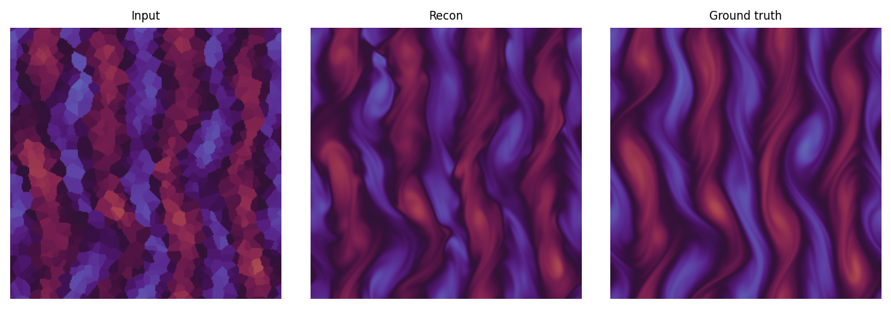

Masked Conditional Reconstruction
This project uses a conditional diffusion model to reconstruct turbulent flow fields from masked observations. The model receives a partially observed input and produces a dense flow-field estimate, which can be compared directly with the corresponding ground truth.

Input
The partially observed flow field supplied to the model.
Reconstruction
The dense field generated conditionally from the observed input.
Ground truth
The reference flow field used to evaluate the reconstruction.